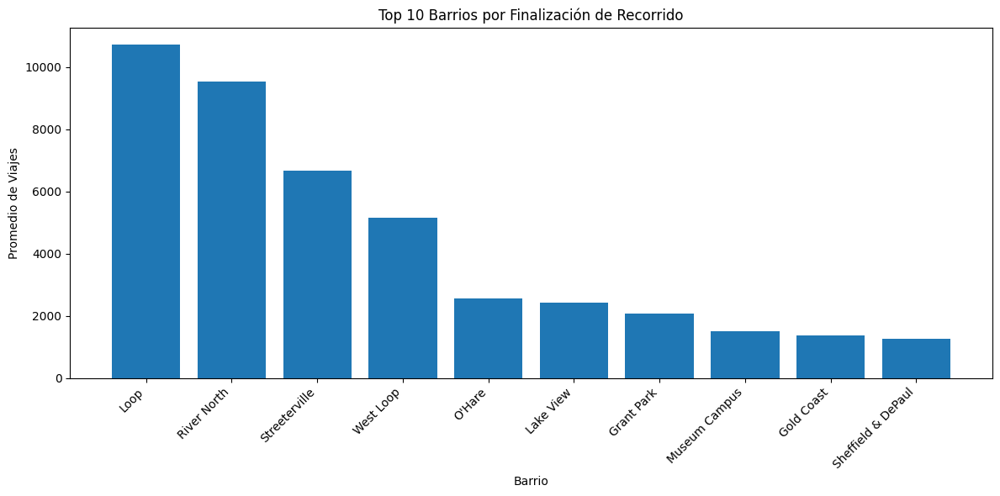
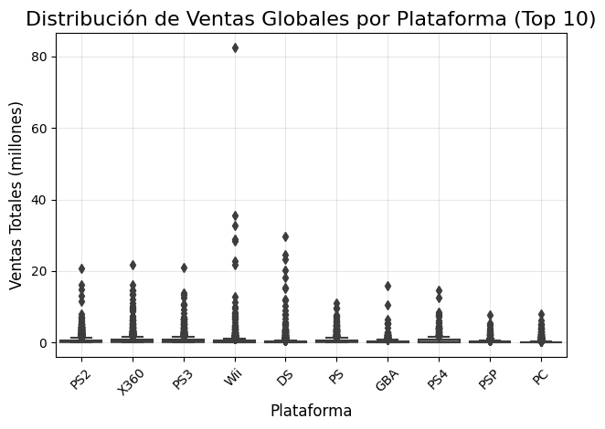
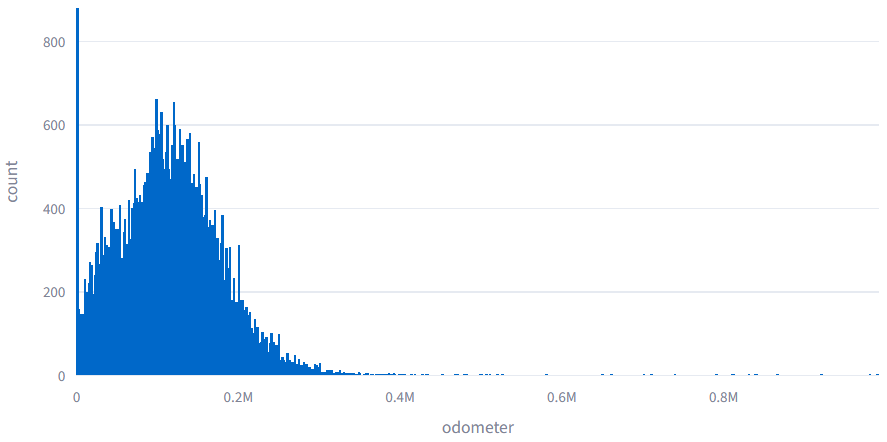
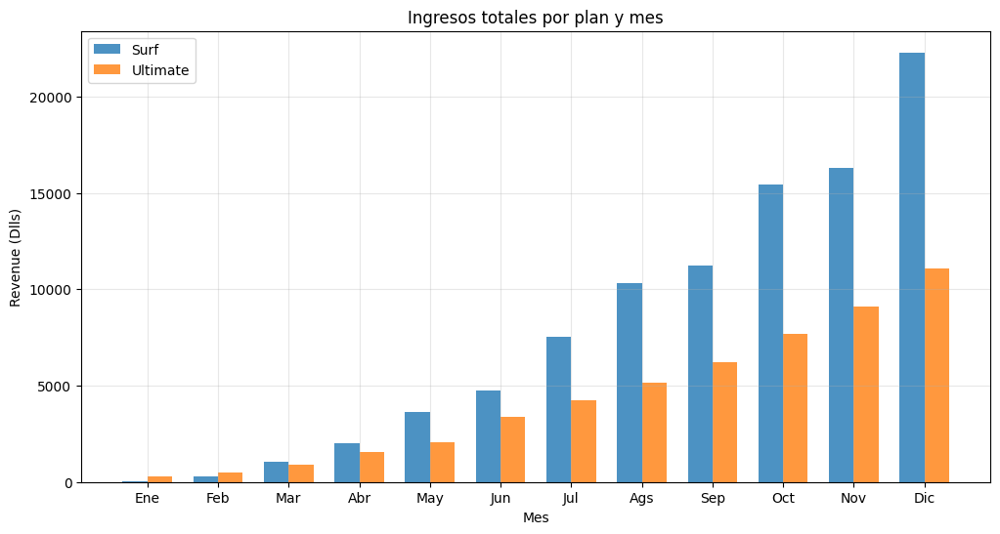

Transformo datos en insights accionables que impulsan decisiones estratégicas.
📊 +10,000 registros analizados | 📈 Proyectos con impacto real
Ver proyectos ContactarmeSoy Analista de Datos en formación con background en ingeniería en comunicaciones y electrónica y más de 5 años de experiencia en tecnología, gestión de proyectos y soporte a sistemas críticos.
He desarrollado soluciones basadas en datos utilizando Python, SQL y Excel, enfocándome en la limpieza, análisis y visualización para generar insights accionables.
En mi experiencia profesional, he implementado dashboards y automatizaciones que mejoran la toma de decisiones y optimizan procesos operativos.
Me interesa transformar datos en soluciones que generen valor de negocio, especialmente en análisis de mercado, optimización de procesos y toma de decisiones basada en datos.
Actualmente continúo fortaleciendo mis habilidades en visualización con herramientas como Power BI y Tableau, buscando integrarme a un equipo donde pueda aportar análisis claros, estructurados y orientados a resultados.
Problema
Una empresa de transporte urbano necesita comprender cómo se comporta la demanda de viajes para optimizar la asignación de taxis, reducir tiempos de espera y maximizar ingresos. Sin un análisis de datos, las decisiones operativas se basan en suposiciones y no en patrones reales.
Datos
Se analizaron datos de viajes de taxi que incluyen información sobre zonas de recogida, horarios, número de viajes y duración de trayectos. Estas variables permiten identificar patrones de demanda en función del tiempo y la ubicación.
Proceso
Se realizó limpieza y preparación de datos utilizando Python (Pandas y NumPy). Posteriormente, se llevó a cabo un análisis exploratorio (EDA) para identificar tendencias temporales y geográficas. Se generaron visualizaciones con Matplotlib y Seaborn para analizar la distribución de viajes por zona y hora del día.
Insights
Se identificó que la demanda de taxis se concentra en zonas clave de actividad económica y turística, así como en horarios específicos (horas pico). Este comportamiento es consistente con patrones urbanos donde la demanda varía según factores como ubicación y momento del día. :contentReference[oaicite:1]{index=1}
Impacto
Estos hallazgos permiten a una empresa de transporte optimizar la distribución de su flota, asignando más unidades en zonas y horarios de alta demanda, reduciendo tiempos de espera y aumentando la eficiencia operativa. Además, facilitan la toma de decisiones estratégicas como ajustes de precios y planificación de recursos.

Ver proyecto Ver códigoDataset: +16,000 registros
Realicé un análisis exploratorio de datos sobre ventas de videojuegos para identificar factores que influyen en el éxito comercial de los títulos.

Ver proyecto Ver códigoDataset: +5,000 registros
Desarrollé una aplicación web interactiva para analizar tendencias de precios y características del mercado automotriz.

Ver proyecto Ver código Ver demoDataset: +1,000 usuarios
Analicé datos de clientes para identificar el plan más rentable y optimizar la estrategia comercial.

Ver proyecto Ver código📧 diego.ipn.esime@gmail.com
LinkedIn GitHub🚀 Abierto a oportunidades como Analista de Datos Jr
📍 Disponibilidad inmediata